По материалам книги В. Д. Ермака «Как научиться понимать людей» и Школы системной соционики.
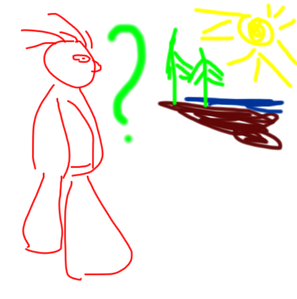 Когда человек познает мир, он накапливает факты, сведения о том, что его интересует — различных объектах и явлениях (феноменах). Этот этап называется феноменологией.
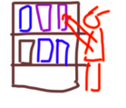 В какой-то момент человек обнаруживает, что некоторые феномены группируются, обладают общими признаками, взаимосвязаны друг с другом и отличаются от других. Выделение этих признаков и связей называется классификацией. Признаки должны быть однозначны и независимы. Поскольку человек очень сложен, выделить такие признаки крайне трудно.
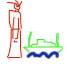 В основе соционики лежит моделирование. Моделирование — исследование реально существующих предметов и явлений путем построения и изучения их моделей. Модель — любой образ, аналог какого-либо объекта, процесса или явления, используемый в качестве его «заместителя», «представителя» (БРЭС, 2003).
В соционике построены модели информационного метаболизма психики. Отличие соционической типологии от типоведения:
Системный подход — направление методологии научного познания, в основе которого лежит рассмотрение объектов как систем в целостности выявленных в нем многообразных типов связей.
Система — множество элементов, находящихся в отношениях и связях друг с другом, образующих определенную целостность, единство (БРЭС).
Система — совокупность элементов, взаимодействующих на основе прямых и обратных связей для достижения заданной цели, или модель взаимодействия моделей объектов (В. Д. Ермак).
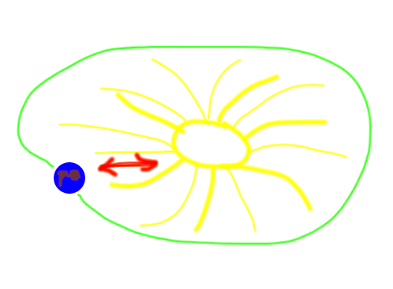
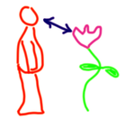 Информация — обмен сведениями между людьми, человеком и автоматом, автоматом и автоматом, обмен сигналами в животном и растительном мире, передача признаков от клетки к клетке, от организма к организму (БРЭС).
Информация — качественная и количественная характеристика управляющих воздействий и реакций, то есть метрика взаимодействия элементов системы.
Окружающий мир воздействует на человека — от окружающего мира к человеку поступают вещественное и энергетическое обеспечение функционирования (вещество и энергия), информационные сообщения (целеуказания, т. е. цель или программа достижения цели, указания по корректировке функционирования и т. п.), а также сигналы ритмики, необходимые для организации функционирования элементов и системы в целом.
Человек реагирует на воздействия — от человека к окружающему миру отсылаются вещественные и энергетические результаты функционирования, т. е. полезные продукты и отходы (вещество и энергия), информационные сообщения (о состоянии системы, о пути следования к цели, полезные информационные продукты и др.), а также необходимые для обеспечения обмена сигналы ритмики (в узком смысле — синхронизация).
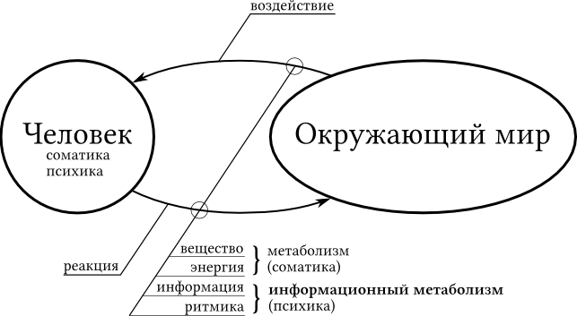
Биология, физиология и т. д. исследуют соматику на основе принципа метаболизма — обмена веществом и энергией с окружающим миром.
В основе соционики лежит принцип информационного метаболизма психики, суть которого есть обмен психики с окружающей средой информацией и сигналами ритмики с целью построения, поддержания функционирования и наполнения информацией психики.
(!!!) Потоки информации из внутреннего мира (от организма, из памяти) считаются внешними по отношению к психике.
Органы ощущений считывают сигналы с носителей, формируют первичный информационный поток и направляют его в психику для обработки, в результате которой в психике формируется наше субъективное представление об окружающем мире.
Первичный информационный поток, воспринимаемый психикой, делится на четыре составляющих: «объекты», «пространство», «энергия» и «время». Эти составляющие называются макроаспектами.
Информационный аспект — часть информационного потока взаимодействия психики с окружающим миром, в пределах которого размещается определенный информационный массив — набор слов, понятий и языковых оборотов, отражающий субъективный смысл (семантику) сущностной или отношенческой информационных составляющих одной из первореалий мира, представленной макроаспектом.
Из четырех макроаспектов мы получаем восемь аспектов. Для этого каждый макроаспект «расщепляется» надвое, мы рассматриваем каждый макроаспект как состоящий из двух составляющих:
Модель переработки информации предполагает, что процесс познания можно разложить на ряд этапов, каждый из которых представляет собой некую гипотетическую единицу, включающую набор уникальных операций, выполняемых над входной информацией.
На каждый этап поступает информация от предыдущего этапа, и затем над ней выполняются свойственные для данного этапа операции. Для удобства мы можем считать, что вся эта последовательность начинается с поступления внешних стимулов.
Предполагается, что реакция на событие является результатом серии таких этапов и операций (например, восприятие, кодирование информации, воспроизведение информации из памяти, формирование понятий, суждение и формирование высказывания). (Р. Солсо «Когнитивная психология»)
Структура психики в системной соционике строится на основе теории управления.
Универсальная модель:
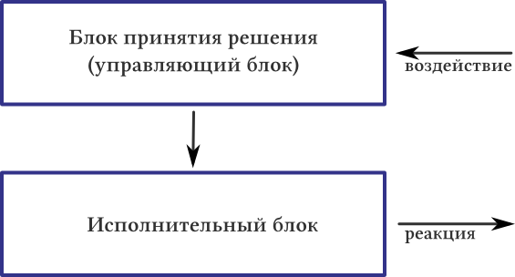
Принятие решения в ответ на воздействие состоит из двух этапов:
Исполнение решения требует наличия рабочей программы выполнения задания и рабочего инструмента для реализации результата.
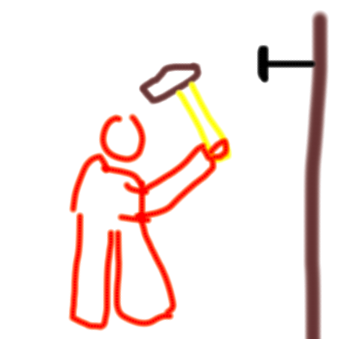
Решение вопроса нужно ли включаться в мир происходит на основе индивидуального опыта.
Решение референтного вопроса «умею-не умею» фактически обозначает наличие или отсутствие индивидуального опыта и индивидуальных норм.
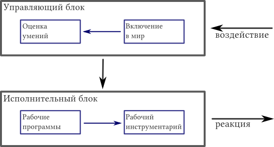
Когда задачи привычны и знакомы, можно действовать на автомате, не думая. Но в жизни постоянно появляются новые задания.
Если задача «не моя», а заставляют её решать меня, придётся обратиться «к общественности», к другим людям (кто-нибудь ведь решал что-то подобное!) — иными словами, поинтересоваться социальными нормами. Если новую задачу я «не умею» решить, придётся «покопаться» в опыте решения других новых задач, т. е. обратиться к своему социальному опыту.
Если для исполнения нового задания у меня нет рабочей программы, придётся её придумать, используя для этого свой «интеллект». Если нет подходящего инструмента, надо проявить творческий подход и создать новый инструментарий — «сотворить» (здесь и далее творчество понимается в широком смысле слова, как творение нового).
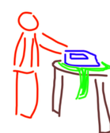 Привычные задачи решаются автоматически, принятие решения (Суперид) внешне не заметно, исполнение (Ид) — неосознаваемое в момент исполнения. Ид — идеология индивидуальности (направлена на себя).
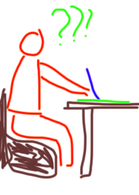 Новые задачи передаются в ментальный суперблок. Принятие решения (Суперэго), как правило, не очень заметно, интеллектуальное творчество (Эго) проявляется вслух. Эго — идеология личности (направлена на общество).
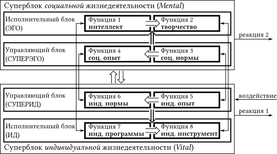
Суперблок индивидуальной жизнедеятельности (Витал: Ид и Суперид) обеспечивает функционирование психики в нормальных, привычных условиях и знакомых задачах. Обычно такие блоки функционируют автоматически (и в природе, и в технических системах, созданных человеком) — человек неосознанно решает индивидуально необходимые задачи, как говорят, «не задумываясь»… Но, если задумается, может осознать (как бы «задним числом», после того, как дело сделано) свои мысли и действия — иными словами, человек привычные дела и поступки сначала делает, а потом может осознать то, что сделал.
Суперблок социальной жизнедеятельности (Ментал: Эго, Суперэго) включается в работу тогда, когда на каком-то этапе принятия решения или исполнения в блоке индивидуальной жизнедеятельности задачу, поступившую от надсистемы, привычным, знакомым способом решить не удаётся — задача новая.
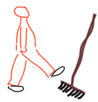 Ex (expirience) — параметры опыта — характеристика индивидуального (Ex) или личностного (социального) опыта (Ex*), полученного от рождения и наработанного человеком в течение жизни.
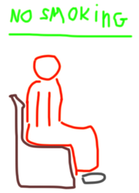 Nr (norm) — параметры норм — характеристика норм, правил, принятых приёмов и стандартов (индивидуальных — Nr или социальных — Nr*), которых следует придерживаться.
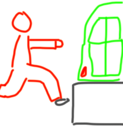 St (situation) — параметры «ситуации» — характеристика условий, «обстановки» (индивидуальной St или социальной St*).
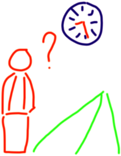 Tm (time) — параметрическое время — момент индивидуального (Tm) или социального (Tm*) времени в прошлом, настоящем или будущем относительно которого принимается или исполняется соответственно индивидуальное или социальное решение; иными словами, время как точка на шкале времени, т. е. как параметр «привязки» обработки информации к некоторому моменту в прошлом, настоящем или будущем.
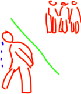 Если не поступает информация на суггестивную, то развивается ощущение невключенности в социум.
По референтной человек зависим от оценки социумом его умений — может развиться неуверенность в них.
Интеллектуальное творчество блокируется внешними запретами — в результате вербально-поведенческие реакции человека имеют нормативно-неуверенный характер (искажение типа Суперэго).
«Порядок — силой» (немецкая идеология) — здесь все достаточно «прозрачно»: порядок — это явно некоторое соотношение каких-то объектов или чего-то подобного — аспект «система» («структурная логика», БЛ); сила — аспект «воля» («волевая сенсорика», ЧС).
«Стремление к малым группам, тихое, интимное общение в ограниченном кругу близких по духу людей, неагрессивный отпор недоброжелателям — это нормально, это сейчас и имеет место в Украине…» — в этой фразе можно выделить акцент на отношения, стремление избежать, уйти от плохих отношений с внешним окружением в некий защищенный, свой круг и, тем самым, пассивно отстаивать себя и своих близких — аспекты «отношения» («этика отношений», БЭ) и «воля» («волевая сенсорика», ЧС).
Знаки психических функций — это свойство функции, характеризующее зону компетенции функции с точки зрения качества, дистанции, направленности и масштаба обработки информации.
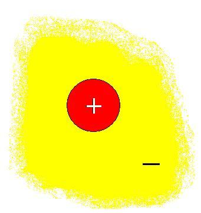 Зона компетенции — та область, в которой функция работает в соответствии со всемипараметрами, свойственными данной функции. Всю возможную информацию по аспекту с точки зрения знаков можно описать двумя зонами:
Качество: знак «+» — «позитив», компетентность в положительной области свойств при некомпетентности в негативной области; знак «−» — уход от «негатива», от отрицательных свойств к положительным, компетентность в позитивной и негативной областях.
Масштабность: знак «+» — локальность, «крупный план», конкретика, детализация в пределах «своего круга» функции; знак «−» — глобальность, «общий план», всеобщность функции.
Направленность: знак «+» — внутрь области ответственности функции («забота о защите своего круга»); знак «−» — наружу из области ответственности функции (влияние, «давление» на другие «локальности»).
Дистанция: знак «+» — «близкая» психологическая дистанция; знак «−» — «далёкая» психологическая дистанция.
Реальный человек настолько сложен и многопараметричен, что прямое его исследование невозможно!
Описание одного человека другим из-за многозначности и избыточности естественного языка, как говорят, дважды субъективны: по восприятию — одним и по пониманию — другим.
Описания типа — это красочный «рассказ» о реальном человеке данного типа психики (в лучшем случае, обобщение описаний большего или меньшего числа людей… предположительно одного типа). Такие описания носят псевдостатистический характер потому, что основаны на мизерных, нерепрезентативных выборках, содержат случайный набор характеристик и параметров, никак не связанных с основополагающим принципом соционики — принципом информационного метаболизма психики и, следовательно, с моделью ТИМ психики… Более того, поскольку реальные люди, по-крайней мере, в нашем социуме часто отягчены искаженниями ТИМ психики, описания так же часто представляют извращенную «картину» типа.
Описание модели — это объяснение функционирования одной из структур ТИМ психики.
Видит мир как общество взаимодейтсвующих личностей, между которыми складываются тонкие сети взаимных симпатий и антипатий. Рассматривает и оценивает все по своему отношению к объекту (человеку) и по тому отношению, которое объект (человек) порождает в ближнем окружении (ф. 1: БЭ). Видит отношеня в их развитии, тонко чувствует детали и нюансы отношения к себе и интересующему его объекту. Не понимает орицательных отношений, теряется в ситуациях отрицательных отношений и старается их всячески избегать (+БЭ).
Видит внутренние склонности, способности и мотивы поведения человека (ф. 2: ЧИ). Умеет найти оправдание практически любым отрицательным поступкам, увидеть в отрицательном положительное (−ЧИ). Корректирует свое отношение в зависимости от изменения восприятия внутреннего содержания объекта (человека). В стремлении не испортить отношения способен проявлять незаурядную деликатность и изобретательность, чтобы не допустить даже намека на плохое отношение (+БЭ → −ЧИ).
Общепринятые представления о конкретных логических системах, структурах, социальной иерархии. Существование общепринятого конкретного социального порядка, которому приходится подчиняться, воспринимает как неизбежную необходимость (ф. 3: +БЛ).
Осуществление волевого давления, нажима, использование силовых методов воздействия только на основе личностного опыта (ф. 4: −ЧС). Если необходимо, отстаивает свое понимание логики, правильной последовательности, струтуры, теории, пытаясь вынудить собеседника принять его точку зрения (+БЛ → −ЧС).
Однако испытывает затруднения при необходимости осуществить такое давление, болезненно воспринимает критику волевых качеств, а также необходимость проявлять насилие (ЧС).
Привлекает любая информация о практических моментах деятельности, свойствах и параметрах объектов, об оптимальной организации дела вообще, тенденциях развития технологий (−ЧЛ). Собственную практическую деятельность организует только исходя из приобретенного индивидуального опыта (ф. 5: ЧЛ).
Хотел бы считать, что обладает вкусом, умеет организовать пространство вокруг себя, создать комфортную обстановку. Нуждается в оценке этого умения (ф. 6: +БС). Неосознанно активизируется при необходимости оптимизировать какой-нибудь процесс посредством налаживания удобства в работе (+БС → −ЧЛ).
Имеет индивидуальные привычки выражения и изменения настроений. В разных ситуациях ободряет себя и окружающих подходящими средствами (ф. 7: ЧЭ). В повседневной деятельности пользуется спонтанным умением оценить ближайшее развитие событий, врожденным чувством перспективы для предотвращения отрицательных сценариев развития ситуации (ф. 8: +БИ).